ACES Display - Warlock
The Air Combat Engagement Summary (ACES) Display is intended to provide an integrated display that provides several sets of air combat data for a platform that
contains a WSF_SA_PROCESSOR in a single, reconfigurable display.
Note
The ACES Display plugin is a prototype capability and is not complete. As a result of this, it is disabled by default and must be enabled through the Plugin Manager.
To open a display, open the context menu for a platform (right click) in the map display or the platform browser and select ‘ACES View’.

Display Sync
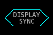
The Tactical Situation Display (TSD) and the Situation Awareness Displays (SAD) zoom and centering can be synchronized by clicking the ‘Display Sync’ button in the center.
When enabled, the left regions zoom and centering will be used as the reference for syncing the displays.
Display Swapping
The four circle display regions may be swapped by clicking on the left or right side of either the top or bottom display:
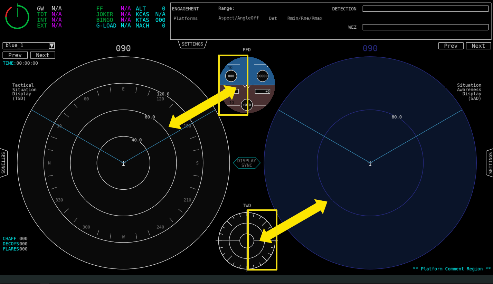
Setting a Center Point
A center point may be set to allow the user to zoom and get more information about a particular region on either the TSD or SAD display. This option is available in the context menu (right clicking). Resetting the center point will return the ownship to the center. Below is an example of setting a new center point:
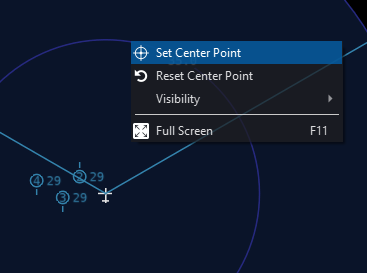
A new center has now been set:
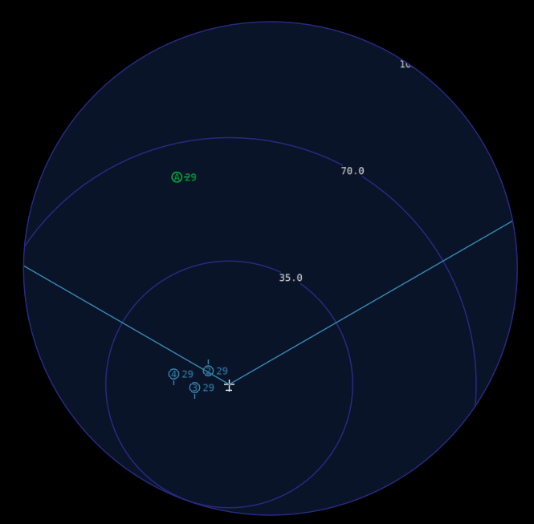
Settings
The Tactical Situation Display (TSD), Situation Awareness Display (SAD), and Engagement regions of the ACES Display have settings tabs that can be opened to toggle various settings. Explanations of settings are given
in the description of each display region below.
Display Regions
The ACES Display has various regions with particular types of data. These are detailed below.
Situation Awareness Display
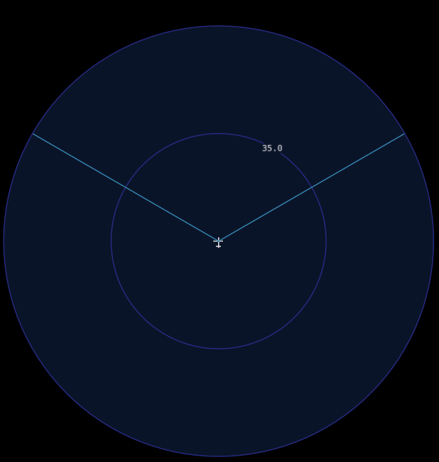
The Situation Awareness Display(SAD) provides the user with a graphical summary of the tactical perceptions using WSF_SA_PROCESSOR data from the platform.
Perceptions
Perceived entities are drawn using their perceived identification. Entities may also include additional information, such as altitude (thousands of feet) to the right of the entity icon, as well as priority threat number (at the upper left of the icon) and priority target number (at the lower left of the icon). Entities are oriented to their heading. Entities that are marked as important by the SAP are shown with a white outline. Coasting entities are shown as transparent, and thus appear dimmer. If eyes_track_processor is set, then an eye-shaped icon will appear to the left of the entity’s icon.
Symbol |
Identification |
Description |
|---|

|
Bogie/Unknown |
Yellow square |
|
Neutral |
White square |

|
Bandit/Threat |
Red triangle |

|
Friendly |
Green circle w/ optional id |

|
Flight |
Blue circle w/ flight id |
|
Missile |
Arrow with circle/square/triangle |
As an example, the perception shown below is a threat traveling at a relative bearing of 0 degrees at an altitude of 35,000 feet. It has been assessed as the second highest priority threat and the highest priority target. It is marked as important, and is visible to the pilot.

Groups
Groups are displayed using circles that are large enough to contain all members of the group. A minimum group radius may be specified in the WSF_SA_PROCESSOR. This is often useful to aid in visualization. Each group contains a unique id, which is displayed to the top-right of the group circle. Groups are drawn in red if all perceptions belonging to it are perceived as bandit/hostile – otherwise, the group will be yellow (bogie/unknown). If a group contains only coasting perceptions, it will coast – this is shown using a faded (ghost) color. If a group is set as “important”, then it will be surrounded by a white outline. If it is unfocused, then none of its entities will appear. Instead, it will have a transparent fill, with the number of entities written in the center.
All perceived entities are members of a group. However, unless “Show Perceptions” is turned off in the SAD settings, groups that contain only one entity are not shown.
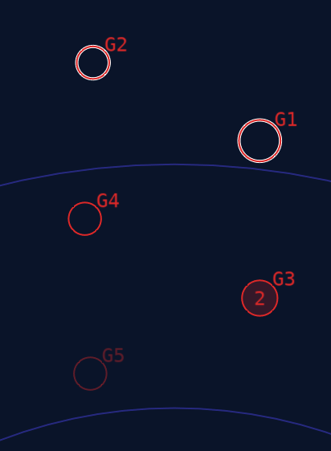
Truth
Truth data can be shown, which is often useful to compare with perceived data. Truth is drawn in magenta, since no other symbol uses that color – this makes truth icons easy to see. Truth entity icons are aligned with their current heading. A chevron shape is used for air domain icons (both aircraft and weapons) – all other domains use a square shape. This allows easy distinction between aircraft/weapons and other platform types.
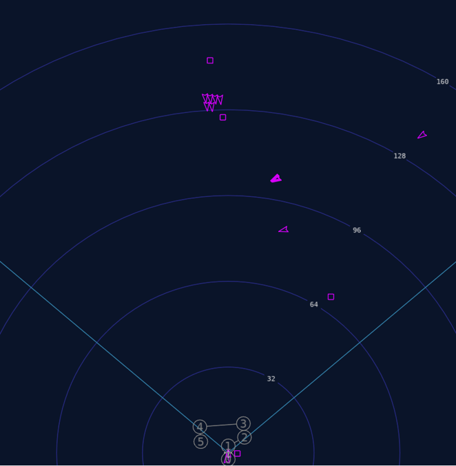
Situation Awareness Display Settings
The following settings may be set for the SAD:
Option |
Description |
Ownship Position |
Sets the offset position of the ownship on the compass (Centered, Offset, Bottom) |
Show Perception |
Toggles visibility of Perception entities |
Show Truth (Air) |
Toggles visibility of Truth entities in the air domain |
Show Truth (Other, Non-Air) |
Toggles visibility of Truth entities in the non-air domain |
Show Friendlies |
Toggles visibility of Friendlies (non-flight) |
Show Flight Members |
Toggles visibility of Flight members |
Show Priority Threats |
Toggles visibility of Priority threat numbers (Top left of perception entity) |
Show Priority Targets |
Toggles visibility of Priority target numbers (Bottom left of perception entity) |
Show Altitude |
Toggles visibility of Altitude in thousands of feet (Middle right of perception entity) |
Show Importance |
Toggles visibility of Importance as a white outline around entities and groups marked as important |
Show Visibility |
Toggles visibility of Visual Tally Indicator (Middle left of perception entity) |
Show ESM/RWR Tracks |
Toggles visibility of ESM/RWR tracks (Large triangle on the inside edge of the compass) |
Show Angle Only Tracks |
Toggles visibility of angle only tracks (Small triangle on the outside edge of the compass) |
Show Route |
Toggles visibility of Route/Waypoints |
Show FOV |
Toggles visibility of FOV lines extending from the ownship |
Show Groups |
Toggles visibility of Group perceptions (circles) |
Show Entity Select Mode |
Sets whether entity info is shown on hover or click |
Tactical Situation Display

The Tactical Situation Display(TSD) provides the user with a graphical summary of the current ‘Tactical Situation’ using track data.
Tracks
Track entities are drawn using their received identification.
Image |
Identification |
Symbol |
|---|

|
Bogie/Unknown |
Yellow square |
|
Neutral |
White square |

|
Bandit/Threat |
Red triangle |

|
Friendly |
Green circle |

|
Flight |
Blue circle |
|
Missile |
Arrow with circle/square/triangle |
Tactical Situation Display Settings
The following settings may be set for the TSD:
Option |
Description |
|---|
Show Air |
Toggles visibility of entities in the air domain |
Show Ground |
Toggles visibility of entities in the ground domain |
Show Route |
Toggles visibility of Route/Waypoints |
Show FOV |
Toggles visibility of FOV lines extending from the ownship |
Show Entity Select Mode |
Sets whether entity info is shown on hover or click |
Threat Warning Display
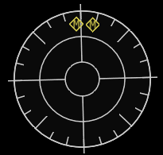
The Threat Warning Display(TWD) displays ESM/RWR tracks along with a possible identification id. To get data into this display, an esm_track_processor must be specified.
Depending on the track identification, different symbolism and coloring will be drawn (see below).
Symbol |
Identification |
Shape |
ID |
|---|
|
Default/Unknown |
Square |
‘U’ |
|
Missile |
Diamond |
‘M’ |
Primary Flight Display
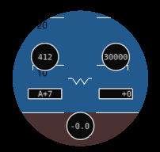
The Primary Flight Display(PFD) provides HUD-type data. This includes Pitch, Roll, KCAS, Altitude, Angle of Attack, Vertical Speed, and G-Load. Regions for the data are shown in the table below:
Data |
Region |
|---|
KCAS |
Top Left |
Altitude (ft) |
Top Right |
Angle of Attack (deg) |
Middle Left |
Vertical Speed (ft/min) |
Middle Right |
G-Load |
Bottom Center |
Engagements
The Engagements region shows engagement data for target and threat platforms of the source platform.
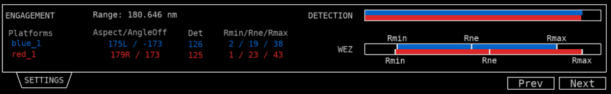
Data is shown for the platform to the target and target to the platform, as follows:
Data |
Description |
|---|
Range |
The range from the platform to the target in nm. |
Aspect/AngleOff |
The aspect and angle off from the platform to the target in degrees. |
Det |
The detection range from the platform to the target in nm. |
Rmin/Rne/Rmax |
The Rmin, Rne, and Rmax WEZ ranges from the platform to the target. |
DETECTION bar |
Shows a normalized view of the detection ranges for the platform and target, normalized to the higher detection range. Slant range may be shown here as a vertical yellow bar. |
WEZ bar |
Shows a normalized view of WEZ ranges for the platform and target, normalized to the higher Rmax. Slant range may be shown here as a vertical yellow bar. |
Engagements Settings
The following settings may be set for the Engagements region:
Option |
Description |
|---|
Engagement Select Type |
Sets how the engagement list is populated. This can be Manual, Threats, or Targets |
Units |
Sets whether units are displayed in nm or km |
There are three ways targets are populated for the engagement region. By default the targeting method is set to manual:
Targeting method |
Description |
|---|
Manual |
The engagement list is populated with platforms the user has selected in the Platform Browser. |
Prioritized Threats |
The engagement list is populated with the prioritized threats list provided by the platforms WSF_SA_PROCESSOR. |
Prioritized Targets |
The engagement list is populated with the prioritized targets list provided by the platforms WSF_SA_PROCESSOR. |
Behavior History
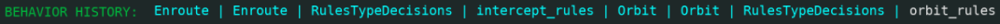
At the bottom right of the display below Platform Comments the behavior history for the source platform is displayed. This will show up to the last 10 behaviors executed by the platforms Advanced Behavior Tree if available (newest behavior executed shown in white).
Countermeasures
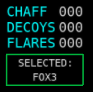
At the bottom left of the display, countermeasures are shown. This includes quantity for chaff, flares, and decoys, as well as the current weapon selected.
TSD and SAD Common Features/Settings
Heading
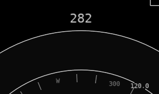
The heading of the ownship in degrees is shown at the top of both the TSD and SAD displays.
Route
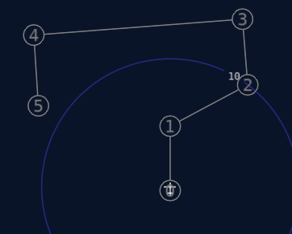
The platform route is shown using light gray circles containing the number of each waypoint.
Ownship Position
There are three options that control the offset of the platform and compass within the displays. These include Center, Offset, and Bottom. By default, the Center display option is selected. This provides the most complete and unbiased perspective of the environment.
However, to provide increased resolution of the forward region, the Offset and Bottom options may be selected. These trade off space behind the ownship for greater space and detail ahead of the ownship platform.
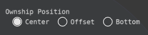
Examples are shown below:
Range
The range(nm) for the both displays may be changed by scrolling the mouse wheel up and down in their region. The default range is 160 nm. Scrolling increases/decreases in increments of 5 nm.
Entity Select Mode
More information on an entity in either the TSD or SAD can be obtained by hovering or clicking on it (depending on the mode selected). This additional information will be shown in a window at the bottom, if available.
{kind=link}
{kind=link}
{kind=link}
{kind=link}
{kind=link}
{kind=link}
{kind=link}
{kind=link}
{kind=link}